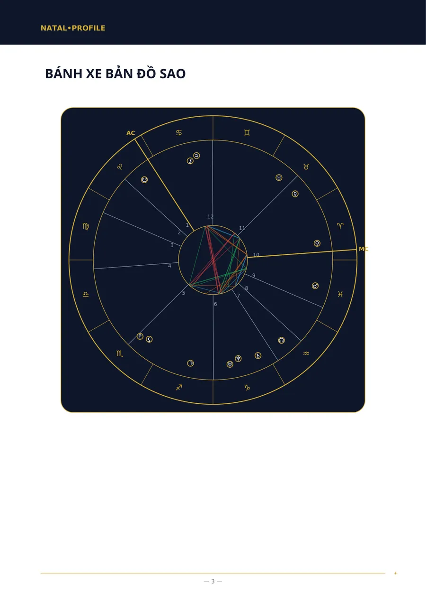
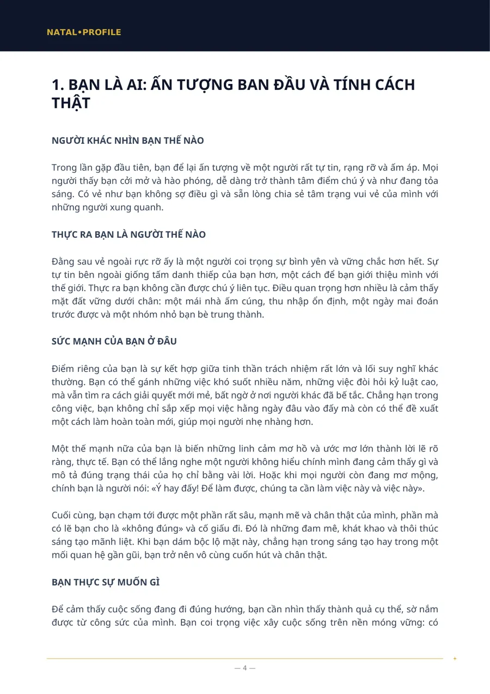
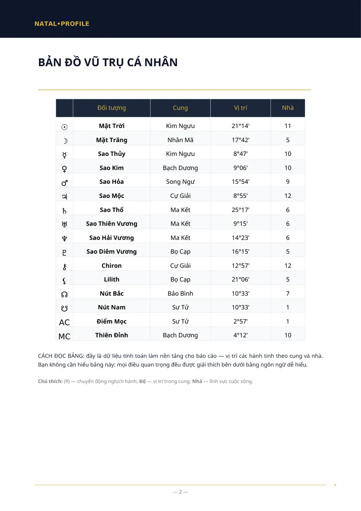
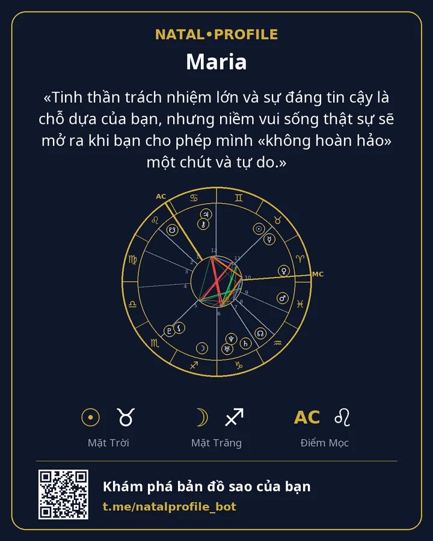

Bản Đồ Sao Cá Nhân (Phân Tích Đầy Đủ)
Bản phân tích đầy đủ về tính cách theo ngày, giờ và nơi sinh.
- 250 ⭐ Telegram Stars
- 9 chương
Bên trong có gì
- Bạn là ai: ấn tượng ban đầu và tính cách thật
- Cách bạn suy nghĩ và ra quyết định
- Cảm xúc và năng lượng: điều gì mang lại cho bạn sự trọn vẹn
- Những điểm yếu có thể trở thành điểm mạnh
- Công việc và vị trí của bạn giữa mọi người
- Tình yêu và các mối quan hệ thân thiết
- Phương hướng phát triển
- Cơ thể và năng lượng
- Điều quan trọng nhất: bắt đầu từ đâu
Dành cho ai
- Bạn muốn hiểu thế mạnh của mình và điều gì ngăn bạn phát huy chúng.
- Bạn biết giờ sinh với độ chính xác khoảng nửa giờ.
- Bạn muốn một bài viết mạch lạc chứ không phải bảng số độ.
Bạn cần nhập gì
Tên, giới tính, ngày, giờ và thành phố nơi sinh.
Trang ví dụ
Các trang thật của báo cáo «Bản đồ sao». Đây là ví dụ: dữ liệu ngày sinh là giả định.




Báo cáo khác
Bản Đồ Sao Cá Nhân (Phân Tích Cơ Bản)
Bản phân tích tính cách khi không rõ giờ sinh.
150 ⭐6 chương · Chi tiết →
Phân Tích Hợp Nhau (Đầy Đủ)
Hai người: điều gì thu hút hai bạn, chỗ nào bất đồng và hai bạn mang lại gì cho nhau.
250 ⭐6 chương · Chi tiết →
Phân Tích Hợp Nhau (Cơ Bản)
Độ hợp tính cách khi không rõ giờ sinh.
150 ⭐5 chương · Chi tiết →
Phân Tích Sự Nghiệp và Tài Chính
Bạn mạnh ở điểm nào trong công việc, nghề nào hợp và bạn quản lý tiền bạc ra sao.
200 ⭐7 chương · Chi tiết →